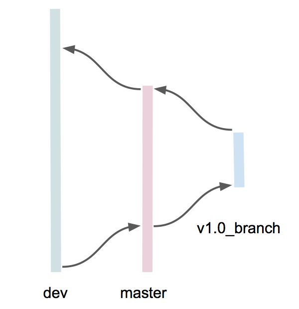

Git Quick Start¶
This assumes you hav git installed.
These commands are everything you need from the point of checking out the dev branch through committing your files and merging to dev if you’ve branched off of it. If things awry, you may need some other commands.
This uses the view servers repository for the examples.
#1. Get a copy of the source code on the dev branch. Change to the directory where you want to put the source code, then:
git clone -b dev https://github.com/ucscHexmap/hexagram
cd hexagram
git fetch
cd hexagram
The fetch allows other branches in github to be seen by your local git.
#2. Get status to verify things went well and verify the branch:
git status
Now you can either work directly on the dev branch, or create your own branch off of dev.
Create your own branch if you want to isolate other developers from your changes as you save them to the remote repository. Then when you are ready to expose your changes to other developers, do a merge from your branch to dev. Your own branch is a good idea if you are working on something experimentally and you are not sure it will go into the common code.
Otherwise, working directly on the dev branch requires fewer merges and you just have to be more careful with each push to the remote. With fewer merges, this is an advantage if you are working closely with others on the same feature.
To work on your own branch create one as follows, otherwise skip this step and continue with the next. The commits, pushes and pulls in the following steps will apply to whichever branch your are currently on.
#3. We’ll call the new branch ‘mine’ for this example. Notice that to create a branch or change to an existing branch is the same command:
git checkout -b mine
git status
#4. Git has helpful messages when you want to commit. After you have added and changed files, ‘git status’ gives something like:
On branch dev
Your branch is up-to-date with 'origin/dev'.
Changes to be committed:
(use "git reset HEAD <file>..." to unstage)
modified: server/statsLayer.py
Changes not staged for commit:
(use "git add <file>..." to update what will be committed)
(use "git checkout -- <file>..." to discard changes in working directory)
modified: client/colors.js
Untracked files:
(use "git add <file>..." to include in what will be committed)
.server/myFile
Adding and checking in files is a two step process where files are staged before actually committed to the repository. In the above:
server/statsLayer.py is already staged for commit
client/colors.js is a modified, existing file
.server/myFile is a new file
So do the appropriate action to stage all the files you want to commit, then continue with the next step.
#5. The commit actually updates the repository:
git commit
A vim editor with your changes shows up. Add a comment and quit the editor. This commits files to your local git repository.
#6. If the commit went without any errors, you probably want to push it to the remote repository for safe keeping in case you lose the files on your laptop.
First pull down any changes from the remote repository so if a merge is required, you can do it locally rather than trying to fix up the remote repository where things could get ugly:
git pull
#7. If there are any merge conflicts, git will tell you about them, and after fixing and sanity checking, commit as in steps 4 & 5 above. If there are no conflicts, your repository now has any changes anyone else committed and pushed to the remote since last time you pulled. Now push your changes to the remote repository:
git push
Ta da! If you are working off the dev branch, you’re golden.
Merging from your branch into dev¶
If you are working on your own branch which is off of dev, you will eventually need to merge your branch into dev. We’ll use ‘mine’ as your own branch in this example.
#8. Change to the dev branch then update your local dev branch from the remote dev branch:
git checkout dev
git pull
#9. Now you do the merge from your branch to dev:
git merge mine
#10. Do sanity testing. Then push your dev to the remote dev:
git push
Releasing a new version¶
The release branch merges go like this, starting in the lower left corner:
{kind=link}
.
#1. Check out the dev branch and update it. Check out the master branch, update and merge in dev:
git checkout dev
git pull
git checkout master
git pull
git merge dev
#2. Sanity test, update the remote master branch and create a release branch:
git push
git checkout v1.0_branch
#3. Change the version and cherry pick any changes you want in dev that were committed after the point of version branching:
vi mainHex.js # edit VERSION
git cherry-pick <list-of-commit-IDs>
#4. Sanity test, make fixes, tag, update the remote version branch:
git push
git tag v1.0
git push v1.0
#5. Merge the version branch into the master branch:
git checkout master
git merge v1.0_branch
git push
#6. Merge the master branch into dev:
git checkout dev
git merge master
git push
(we may want to cherry-pick commits in master that we want to go to dev, rather than merging, which may produce conflicts)
Some other handy git commands:
git branch -r
git ls-remote --tags